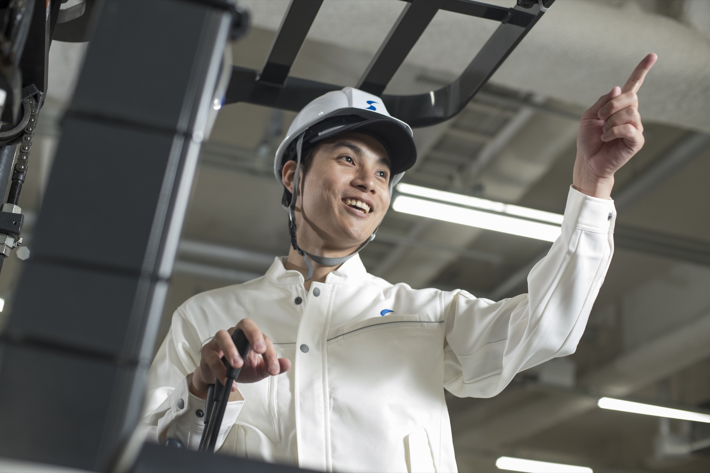
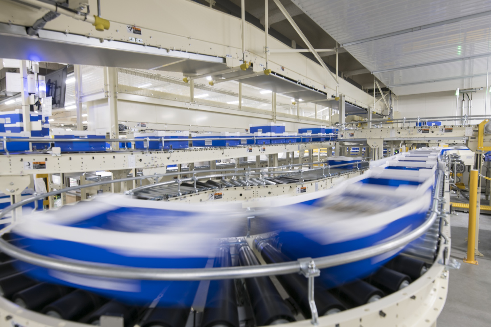
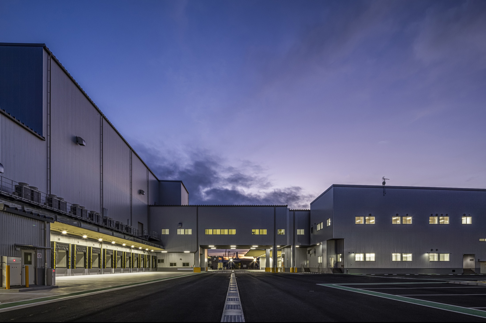
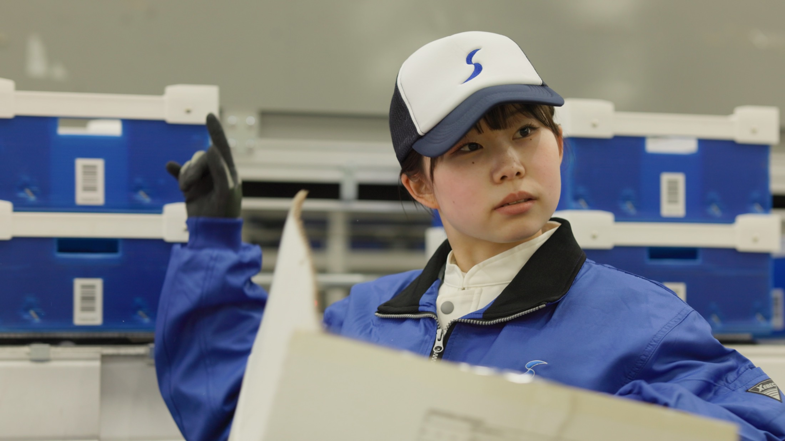
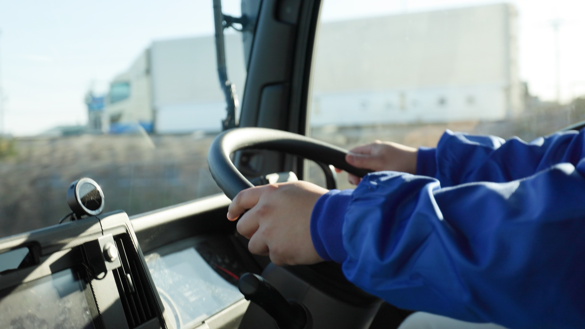
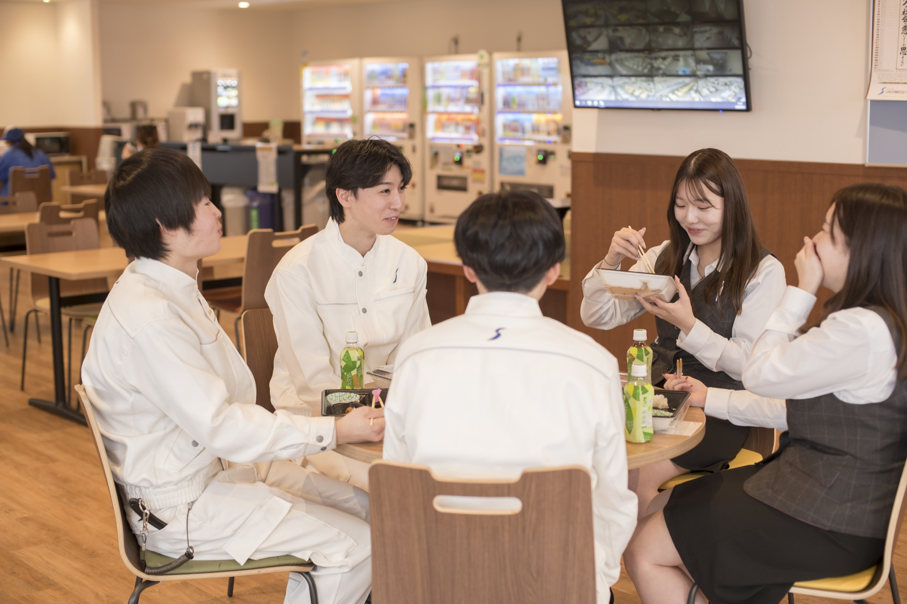
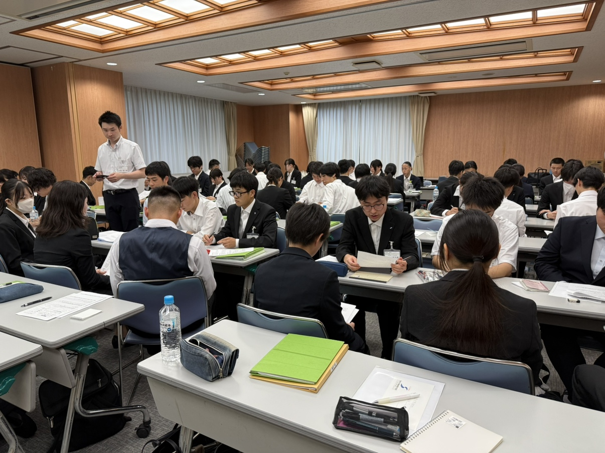

01 / CENTER MANAGEMENT
総合職
作業・配送の流れ、スタッフ、車両、設備、在庫まで物流センター全体を管理・運営。まずは現場で仕事を学び、将来は数字とチームを動かす立場へ。

FOOD LOGISTICS × TEAM WORK
食品物流という、暮らしに欠かせない仕事。
現場を知り、仲間と考え、物流の流れをつくる。
お店に食品が並ぶ。飲食店で料理が出てくる。その裏側には、保管・仕分け・配送をつなぐ物流があります。
シモハナ物流は、主に食品を扱う物流会社。お客様の課題に合わせ、センターの運営から配送までを考え、実行します。ただモノを運ぶだけではなく、人と数字と仕組みを動かす仕事です。
※従業員数はパート・アルバイトを含み、公式会社概要の注記対象企業を含む。


暮らしに欠かせない食品と、社会インフラである物流を担う仕事です。
お客様の困りごとに対し、物流の仕組みをチームで組み立てます。
総合職は現場からスタート。その後、人の指示、収支、作業効率へ視野を広げます。
4つの職種がバトンをつなぎ、食品を必要な場所へ届けます。
作業・配送の流れ、スタッフ、車両、設備、在庫まで物流センター全体を管理・運営。まずは現場で仕事を学び、将来は数字とチームを動かす立場へ。
発注・在庫データの管理やお客様対応、給与計算・勤怠管理などを担当。お客様と現場の間に立ち、正しい情報で物流を動かします。

商品の入出庫と在庫管理を担当。手順を組み立て、食品を安全・正確に管理します。将来は各フロアの管理・運営へ。

物流センターから店舗や次のセンターへ商品を配送。お客様に最も近い「最終ランナー」です。将来は運行管理者も目指せます。

総合職でも、いきなりデスクから人を管理するわけではありません。自分で現場を経験することが、将来チームを動かす土台です。
休日は月9～10日、年間119日。曜日は営業所ごとに異なります。食生活を止めないため、シフトでチームをつなぎます。
荷量や人員、要望は日々変わります。覚えることは少なくありませんが、仲間とより良い流れを考える面白さがあります。
荷量や作業の流れを確認し、現場へ。
ほぼ一日を通して現場に入り、入出庫や仕分けの流れを体で覚えます。
わからないことは先輩に聞く。その繰り返しが、将来の管理につながります。
※具体的な時刻・業務内容は営業所により異なります。
総合職は入社2年目になるタイミングで昇格試験に挑戦できます。合格後は人への指示や数値の確認など、管理職候補としての仕事が増えていきます。
物流の流れと作業を学ぶ
合格者は次のキャリアへ
指示、進捗、収支へ視野を広げる
様々な営業所の管理手法を学ぶ機会

私を起点に物流現場の仕事が動いていく。責任感もありながら、やり遂げたときには達成感も大きいです。
「誰かの役に立ちたい」。そんな思いがある人と一緒に働きたいです。
お客様にとってのベストを追求し、知恵を尽くして現実になった瞬間、「最適解を見つけられた」と嬉しくなります。
いろいろなことに興味を持って取り組める方は、きっとこの仕事の面白さを感じられると思います。
自分の仕事は利益を生んだのか。リアルな数字で結果が見えると達成感につながります。若いうちから強い経営感覚を身につけられています。
自分の力で何かを変えたい。そんな思いがある人には、すごく合う会社です。
知らないことを認め、先輩や仲間の言葉を吸収できる人。
毎日の役割に向き合える人。
「次はこうしよう」と考え、試し、改善し続けられる人。
情報を共有し、周囲と協力できる人。
「1年目から現場を知らずに管理だけしたい」「土日の固定休は絶対に譲れない」という方。職場見学・職場体験でリアルを確かめてほしいと考えています。
※金額幅は勤務地等による。
※時間、休日の曜日は営業所により異なる。
本社・各営業所
エリアは希望勤務地を指定可能。
通常選考の基本フロー。夏・秋冬インターンシップからの早期選考はフローが異なります。
結果を口頭でフィードバックし、強みや職務適性を一緒に確かめるマッチングのための面談です。
土日固定休ではありません。週休2日制で月9～10日休み。曜日は営業所ごとに異なり、年間休日は119日です。
事務職・倉庫内作業職・ドライバー職は転勤なし。総合職はナショナルとエリアから選択でき、エリアは希望勤務地を指定できます。
総合職の1年目は、ほぼ一日を現場で過ごし、作業と物流の流れを覚えます。その後、指示や数値管理の比重を高めます。
求めているのは完成された人材ではありません。素直に学び、目の前の仕事に一生懸命向き合う姿勢を重視しています。
通常選考では職場見学があり、内々定後には希望職種の先輩に半日ほどつく職場体験も行っています。